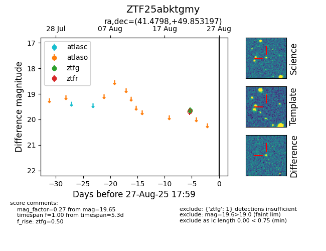

Target ZTF25abktgmy at 2025-08-27 17:59, see:
FINK: fink-portal.org/ZTF25abktgmy
Lasair: lasair-ztf.lsst.ac.uk/objects/ZTF25abktgmy
ALeRCE: alerce.online/object/ZTF25abktgmy
alt names
ZTF25abktgmy (ztf,fink)
coordinates:
equatorial (ra, dec) = (41.4798,+49.85320)
galactic (l, b) = (141.1493,-8.92569)
photometry
last ztfg=19.65
1 ztfg detections
